Этап 1: выполнение 10 задач, первой недели
Задача 1
Ввести с консоли n-размерность матрицы a[n][n]. Задать значения элементов матрицы...
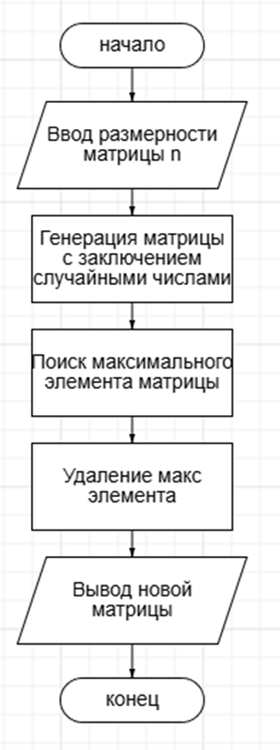
Блок-схема задачи 1
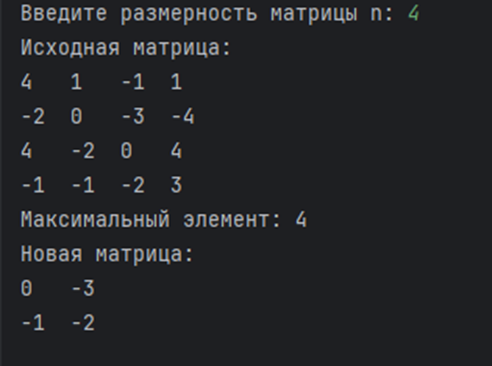
Результат программы 1
Задача 2
Создать классы, спецификации которых приведены ниже. Определить конструкторы и методы setТип(), getТип(), toString(). Определить дополнительно методы в классе, создающем массив объектов. Задать критерий выбора данных и вывести эти данные на консоль. В каждом классе, обладающем информацией, должно быть объявлено несколько конструкторов. Train: Пункт назначения, Номер поезда, Время отправления, Число мест (общих, купе, плацкарт, люкс). Создать массив объектов. Вывести: a) список поездов, следующих до заданного пункта назначения; b) список поездов, следующих до заданного пункта назначения и отправляющихся после заданного часа; c) список поездов, отправляющихся до заданного пункта назначения и имеющих общие места
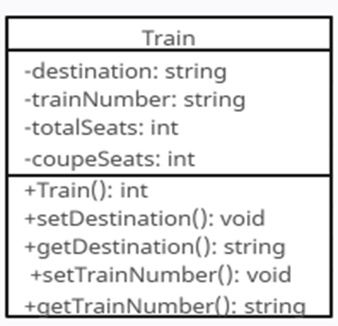
Диаграмма классов задачи 2
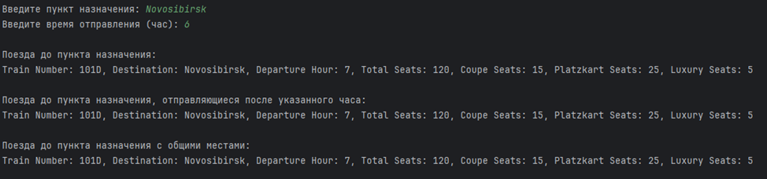
Результат программы 2
Задача 3
Создать приложение, удовлетворяющее требованиям, приведенным в задании. Наследование применять только в тех заданиях, в которых это логически обосновано. Аргументировать принадлежность классу каждого создаваемого метода и корректно переопределить для каждого класса методы equals(), hashCode(), toString(). . Создать объект класса Щенок, используя классы Животное, Собака. Методы: вывести на консоль имя, подать голос, прыгать, бегать, кусать.
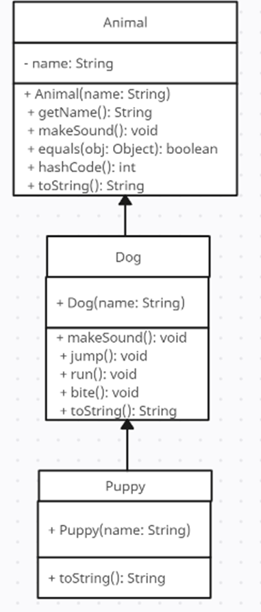
Диаграмма классов задачи 3
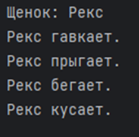
Результат программы 3
Задача 4
Создать класс Mobile с внутренним классом, с помощью объектов которого можно хранить информацию о моделях телефонов и их свойствах
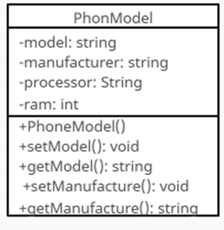
Диаграмма классов задачи 4
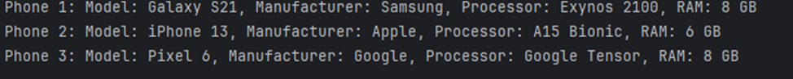
Результат программы 4
Задача 5
В тексте найти и напечатать n символов (и их количество), встречающихся наиболее часто
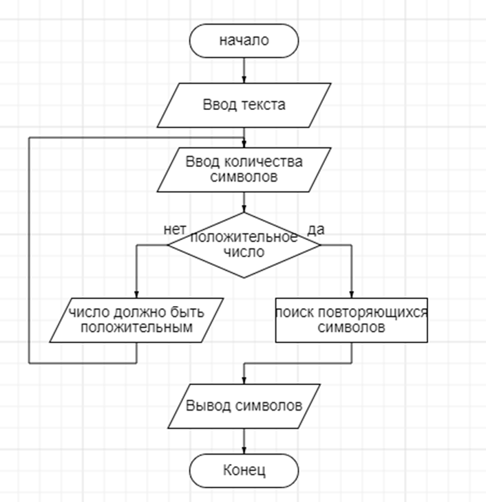
Блок схема задачи 5
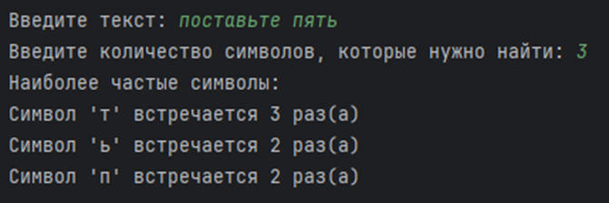
Результат программы 3
Задача 6
Выполнить задания на основе задачи № 3, контролируя состояние потоков ввода/вывода. При возникновении ошибок, связанных с корректностью выполнения математических операций, генерировать и обрабатывать исключительные ситуации. Предусмотреть обработку исключений, возникающих при нехватке памяти, отсутствии требуемой записи (объекта) в файле, недопустимом значении поля и т. д.
Выполнить задания из задачи № 3, реализуя собственные обработчики исключений и исключения ввода/вывода.
Результат программы 7
Задача 7
Составить программу получения на экране рисунков.
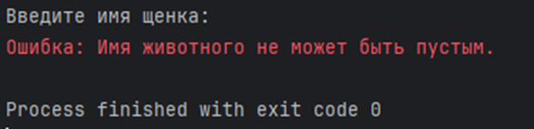
Диаграмма классов задачи 3
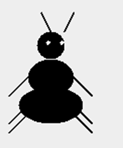
Результат программы 3
Задача 8
Составить описание класса для работы с цепными списками строк (строками произвольной длины). Обеспечить при этом выполнение операций включения в список, удаления из списка эле¬мента с заданным значением, удаления всего списка или конца списка, начиная с указанного элемента.
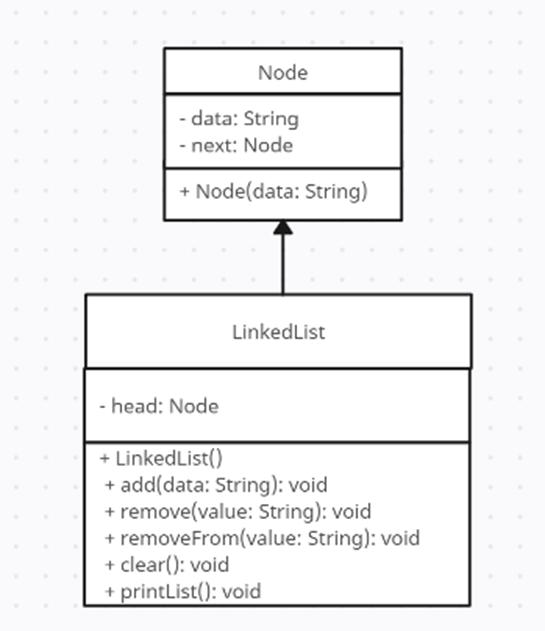
Диаграмма классов задачи 8
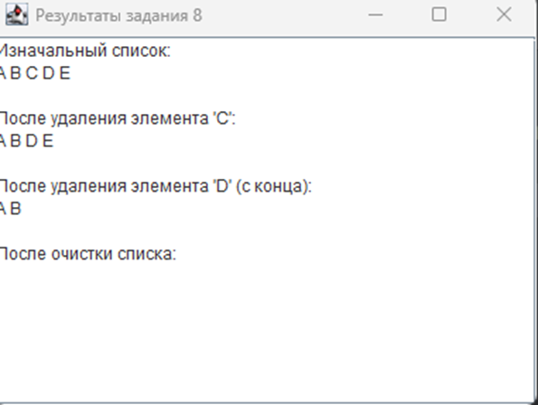
Результат программы 8
Задача 9
Итальянская игра «Математико»
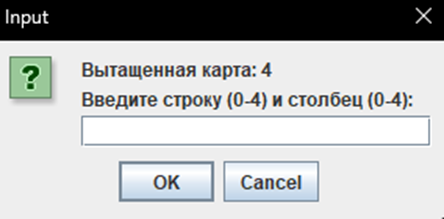
Результат программы 9
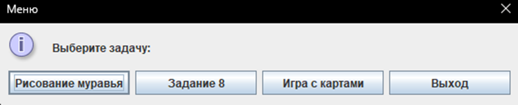
Меню выбора зданий 7, 8, 9
Задача 10.1
Индивидуальный вариант:
N DQ ? ; число без знака
Не используя арифметические команды, реализовать оператор
(1 вариант) N := N * 2
Решение должно содержать не более трёх команд.
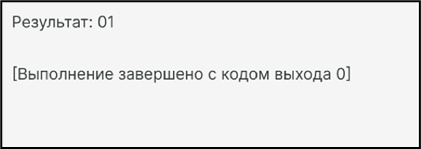
Результат программы Задачи 10.1
Задача 10.2
Индивидуальный вариант:
1 вариант: Реализовать процедуру Padd(x,a), которая реализует оператор x:=x+a. Передача параметров в стеке, стандартные соглашения о связях.
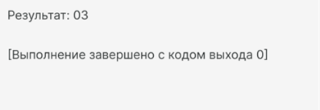
Результат программы Задачи 10.2
Техническое задание
1.1. Наименование системы: Система управления Сетью аптек
Основание для разработки: Анализ предметной области управления аптечными сетями
2 Цель разработки
Целью разработки системы является создание автоматизированной программы для управления данными аптек, клиентами, ассортиментом товаров и информацией о продажах. Это позволит улучшить обработку данных, управление клиентами и анализ финансовых показателей.
3 Область применения
Система будет использоваться для управления данными аптек, обработки информации о продажах, управления ассортиментом и отслеживания финансовых показателей, что способствует более эффективному обслуживанию клиентов и оптимизации работы аптечной сети.
4 Требования к системе
4.1 Функциональные требования:
• Управление данными аптек (создание, чтение, редактирование, поиск и удаление записей)
• Управление данными лекарств (создание, чтение, редактирование, поиск и удаление записей)
• Управление данными сотрудников (создание, чтение, редактирование, поиск и удаление записей)
• Управление данными клиентов (создание, чтение, редактирование, поиск и удаление записей)
• Управление данными продаж (создание, чтение, редактирование, поиск и удаление записей)
• Управление данными проданных лекарств (создание, чтение, редактирование, поиск и удаление записей)
4.2 Нефункциональные требования:
• Интерфейс должен быть интуитивно понятным и удобным для пользователей
• Система должна обеспечивать защиту данных и безопасную аутентификацию пользователей
• Высокая скорость обработки запросов к базе данных
5 Требования к надежности
5.1 Защита данных: система должна обеспечивать резервное копирование данных и защиту от несанкционированного доступа.
5.2 Отказоустойчивость: система должна корректно обрабатывать ошибки и не прерывать работу при сбоях.
6 Условия эксплуатации
Система должна работать на Windows и быть доступна через приложение, написанное на C#, с использованием ASP.NET для графического интерфейса и SQL Server для управления базой данных.
7 Требования к программному обеспечению
7.1 Язык программирования: C#
7.2 Среда разработки: Visual Studio 2022
7.3 Среда выполнения: Windows 11
7.4 База данных: SQL Server
8 Требования к документированию
К системе должны быть предоставлены следующие документы:
• Руководство пользователя
• Руководство администратора
• Техническое руководство по установке и настройке системы
9 Этапы разработки
9.1 Анализ требований и подготовка технического задания
9.2 Проектирование системы и базы данных
9.3 Разработка интерфейса и функциональности системы
9.4 Тестирование системы и исправление ошибок
9.5 Внедрение и обучение персонала
10 Порядок контроля и приемки
10.1 Приемка: система будет считаться принятой, если она соответствует всем требованиям ТЗ и успешно проходит все этапы тестирования.
10.2 Контроль качества: регулярная проверка и тестирование системы перед внедрением.
2. Основные функции
2.1 Добавление новой аптеки
Для добавления новой аптеки выполните следующие действия:
- Заполните данные под надписью. Добавить аптеку.
- Нажмите кнопку "Добавить", чтобы добавить аптеку в систему.
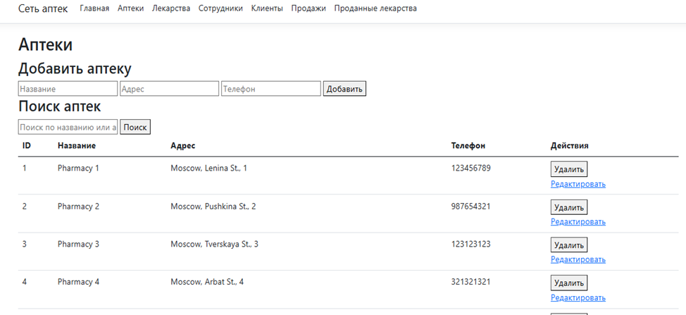
Добавление Аптеки
2.2 Просмотр Лекарства
Для просмотра списка лекарств выполните следующие действия:
- Нажмите кнопку "Лекарства" в главном меню.
- Система выполнит запрос и отобразит список лекарств.
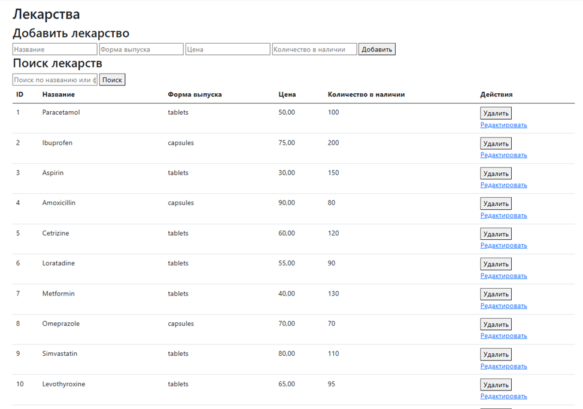
Просмотр лекарств
2.3 Просмотр Сотрудников
Для просмотра издателей выполните следующие шаги:
- Нажмите кнопку "Сотрудники" в главном меню.
- Система выполнит запрос и отобразит список сотрудников.
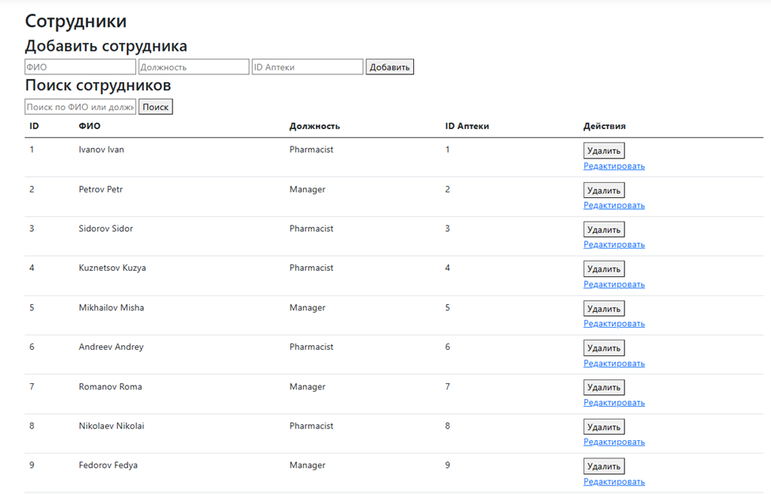
Просмотр Сотрудников
2.4 Просмотр Клиентов
Чтобы просмотреть клиентов:
- Нажмите кнопку "Клиенты ".
- Система выполнит запрос и отобразит список Клиентов.
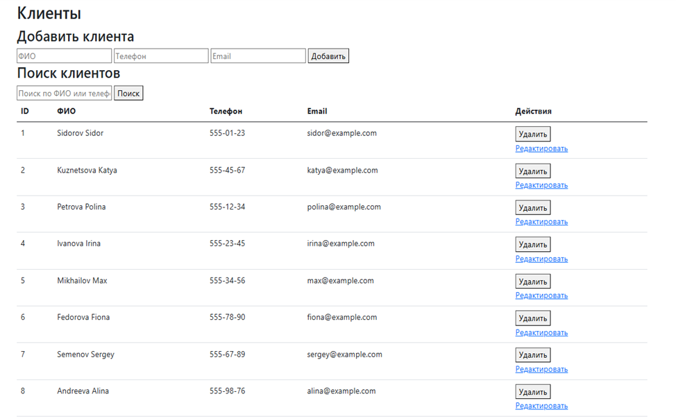
Просмотр Клиентов
2.5 Просмотр Продаж
Для просмотра продаж:
- Нажмите кнопку "Продажи".
- Система выполнит запрос и отобразит список продаж.
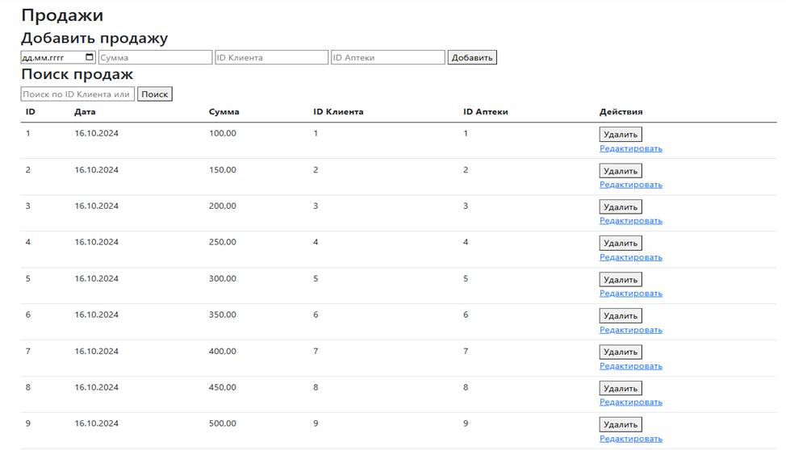
Просмотр Продаж
2.6 Просмотр Проданных лекарств
Для просмотра проданных лекарств:
- Нажмите кнопку" Проданные лекарства".
- Система выполнит запрос и отобразит проданных лекарств
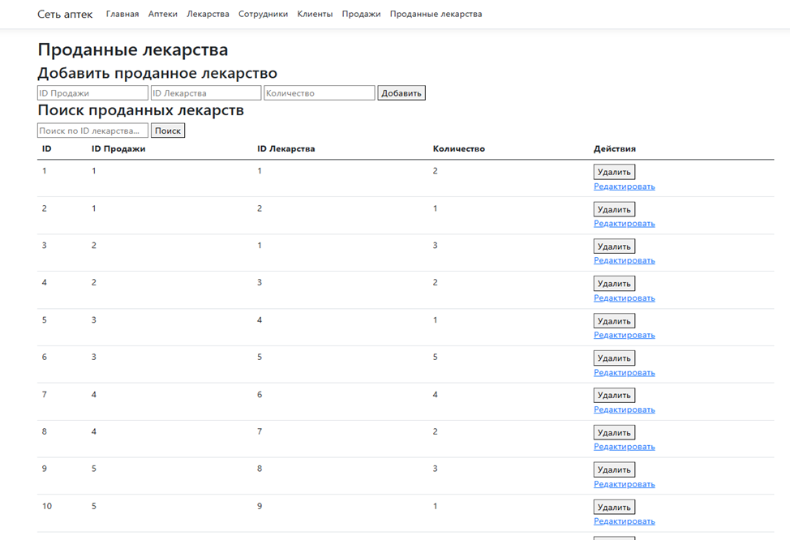
Просмотр проданных лекарств
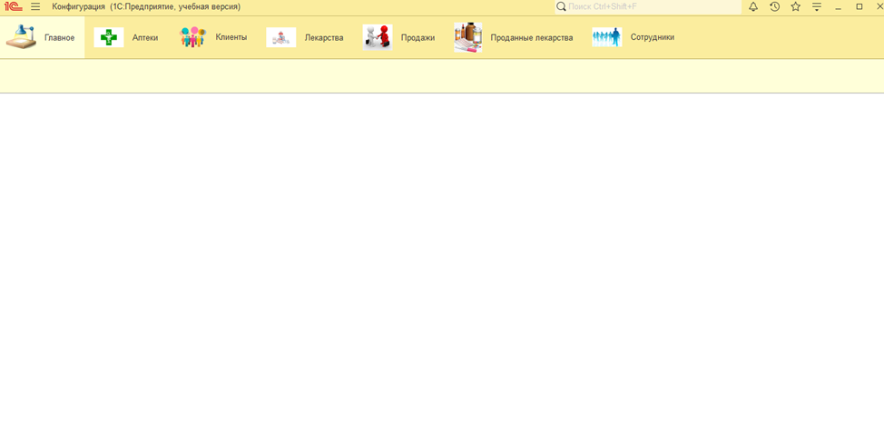
Реализация АИС в 1С